DaylightUI：国服安装与设置教程
面向国服《魔兽世界：无限》的 DaylightUI 安装与设置教程。用黑盒工坊一键安装正式包，进游戏后向导和 /dui 设置都是简体中文，不必再装旧的独立汉化补丁。
装什么、装哪一条
DaylightUI 是一套只为 WoW: Forever（《魔兽世界：无限》）写的完整界面整合，风格偏柔和、简洁，框体、动作条和窗口共用同一套外观。当前要装的正式包是 v1.6.7.1-forever，适配游戏 1.60.1。自 1.6.5.2 起，插件已内置完整简体中文。
在黑盒工坊把版本选成「无限服」，到插件库搜索 DaylightUI 时，列表里会同时出现正式包和一条旧的独立汉化补丁。只装第一条正式 DaylightUI。
不要装旧汉化补丁
- 同一搜索结果里还有 DaylightUI Simplified Chinese Localization，文件名是
DaylightUI_zhCN-0.2.0-for-1.3.1.zip，体积 123.99 KB，适配 1.60.1。英文说明写着 Requires the original DaylightUI addon。 - 这是面向旧版的独立汉化补丁，不是现在要装的主包。正式包进游戏后，向导和
/dui已经全是简体中文。 - 只装列表第一条正式 DaylightUI（v1.6.7.1-forever），不要再装这条补丁。

黑盒工坊安装与目录核对
官网是 https://workshop.xiaoheihe.cn/，用桌面客户端操作。不要和「新手盒子」（wclbox.com）搞混，那是另一个平台。
-
1打开黑盒工坊版本选「无限服」别停在正式服或怀旧服，否则列表对不上
-
2进入插件库左侧点「全部插件」顶栏还有本地插件、WA、配置分享、云端备份、配置同步
-
3搜索 DaylightUI只装列表第一条正式包版本 v1.6.7.1-forever，适配 1.60.1；不要装同页的旧汉化补丁
-
4到「本地插件」核对应显示「当前为最新版本」游戏版本 1.60.1，插件 v1.6.7.1-forever
-
5完全退出并重启游戏新插件通常只在启动时扫描只输入 /reload 往往不够

核对 AddOns 目录
- 黑盒会把文件写到游戏的
Interface\AddOns目录。下面是一台国服电脑上的典型战网路径，只作例子——不是所有人都在 D 盘：
D:\战网\World of Warcraft\_forever_\Interface\AddOns
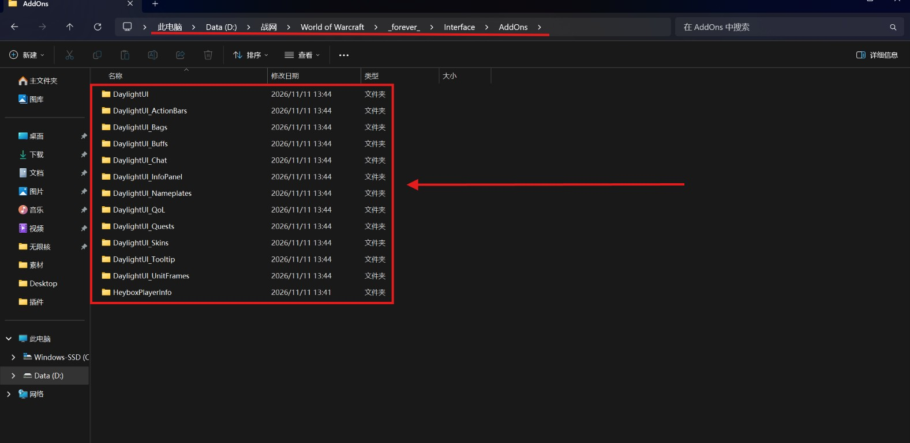
目录里是 1 个核心 + 11 个模块，文件夹名称与原版一致，不要改名，也不要多套一层（例如 AddOns/DaylightUI-版本号/DaylightUI/），否则游戏找不到。同目录的 HeyboxPlayerInfo 不要当成多余文件删掉。
- DaylightUI核心，必须启用设置入口，以及角色、法术书等写在核心里的窗口
- DaylightUI_ActionBars动作条动作条与冷却管理器
- DaylightUI_Bags背包背包与银行
- DaylightUI_Buffs增益增益与减益
- DaylightUI_Chat聊天聊天面板
- DaylightUI_InfoPanel信息微缩地图、伤害统计、数据栏
- DaylightUI_Nameplates姓名板姓名板
- DaylightUI_QoL额外便捷功能
- DaylightUI_Quests任务任务追踪与寻路
- DaylightUI_Skins游戏窗口皮肤给游戏原窗口换同一套外观
- DaylightUI_Tooltip鼠标提示鼠标提示
- DaylightUI_UnitFrames框体玩家、目标、小队与团队框体
设置首页显示 20 / 20 已启用模块。AddOns 目录里是 1 个核心 + 11 个模块文件夹；多出来的项来自写在核心里、不单独出现在插件目录中的窗口。文件夹名保持英文，不要自译、不要改名。
首次向导
快速设置三项
- 伤害 / 坦克：小队在左侧，你和你的目标在中间偏下。
- 治疗者：你的小队和团队以方形格子显示在你下方，驱散一目了然。
- 沉浸预设：适合做任务的平静模式：战斗后动作条和你的框体会淡出。地下城中全部显示。

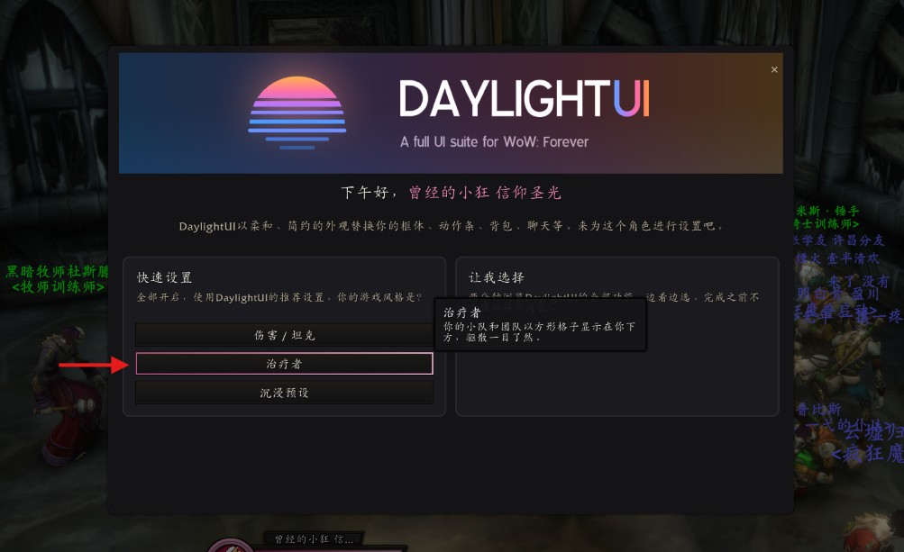
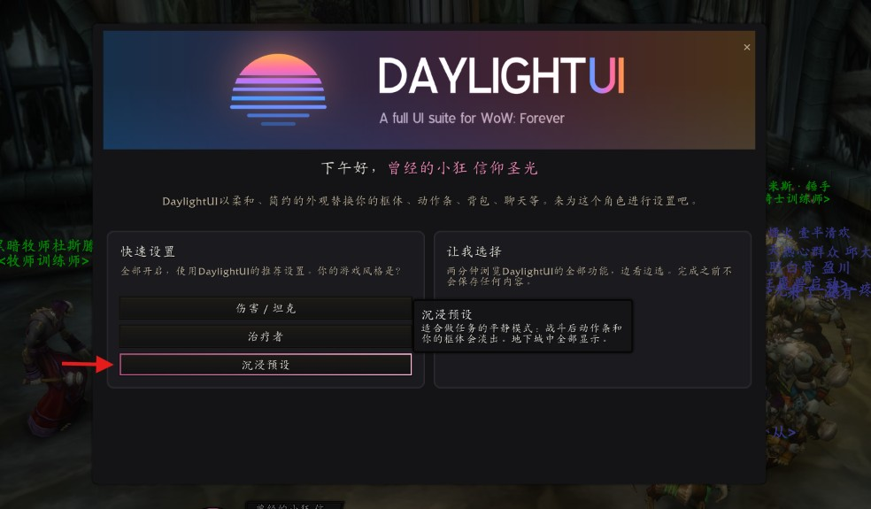
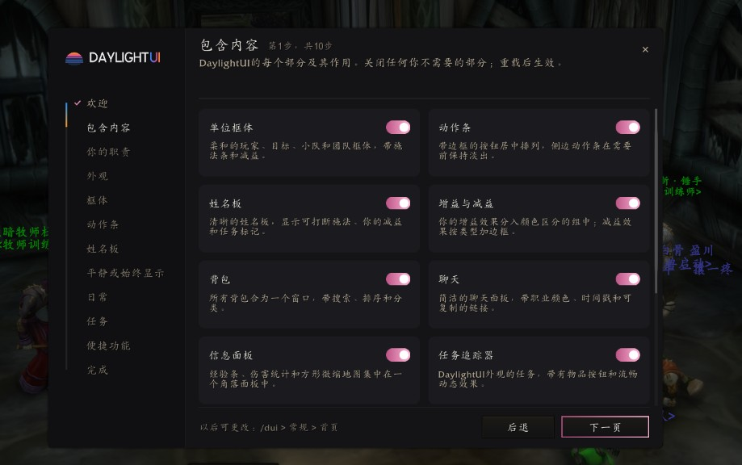
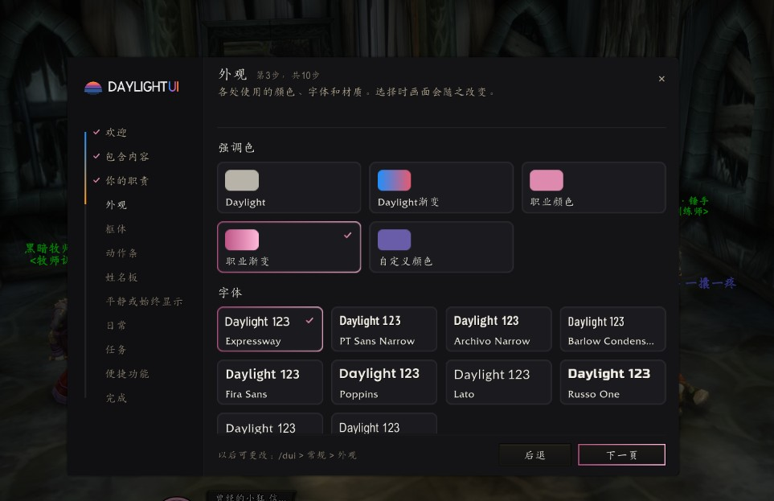
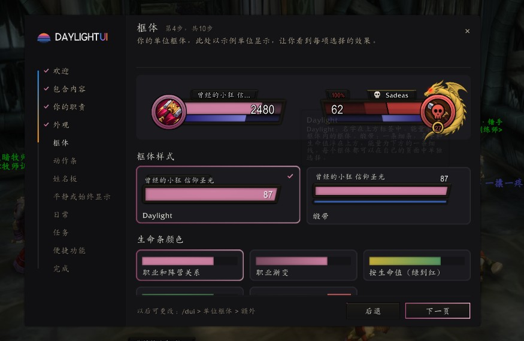
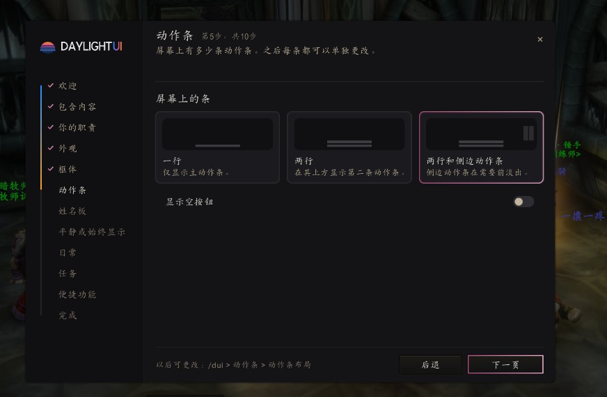
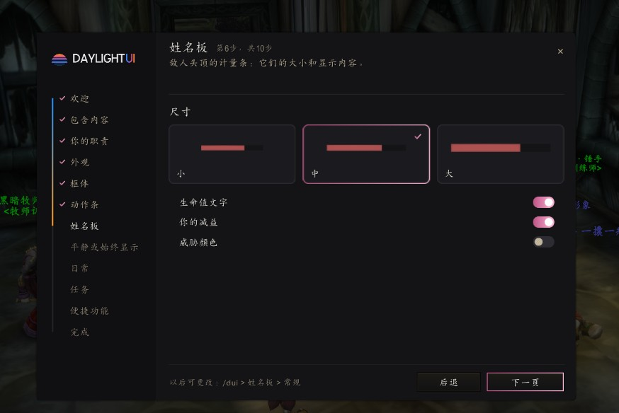
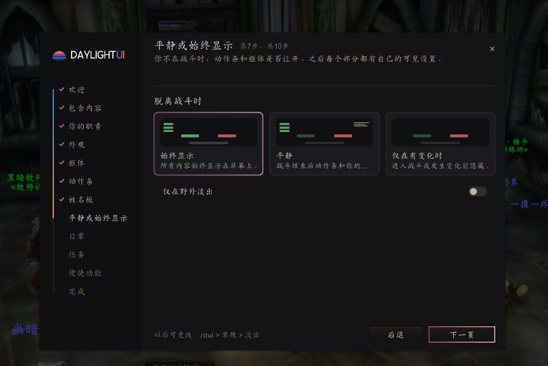
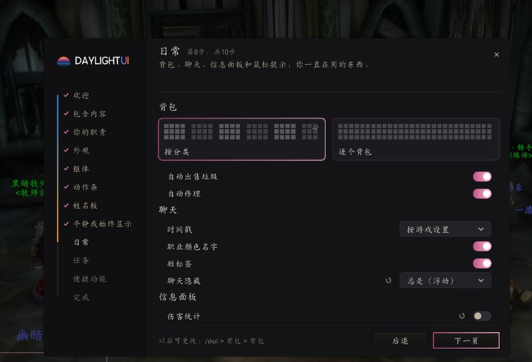
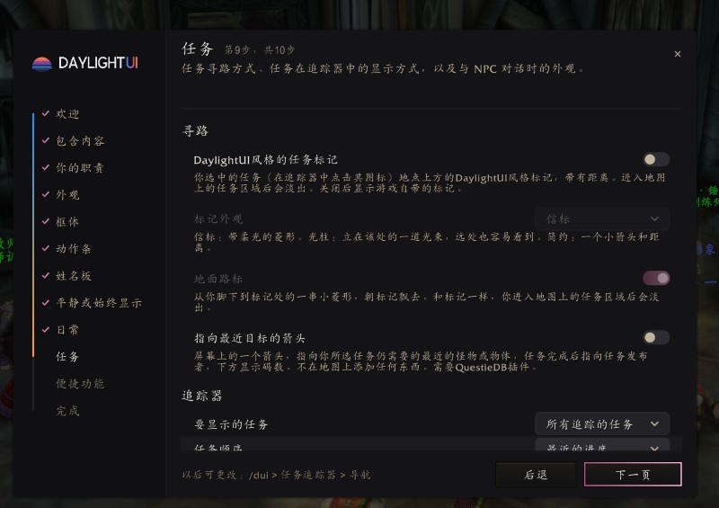
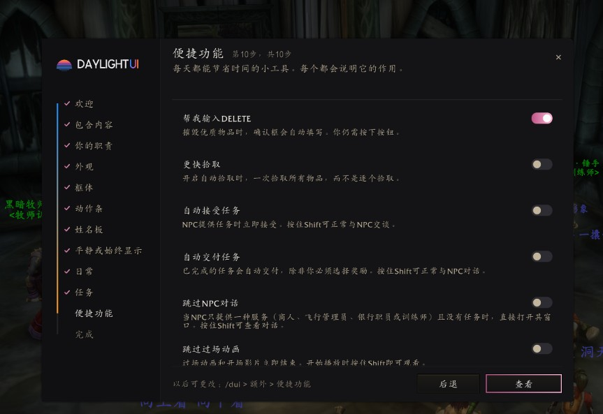
完成页上的实用提示
/dui打开设置。/dui unlock可移动框体，右键点击拖动柄可将其复位。- 可从「综合 > 首页」再次运行本向导，或使用
/dui install。
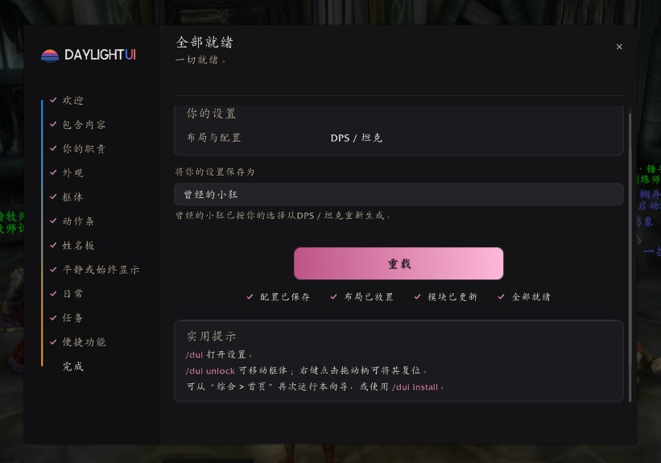
打开设置与解锁布局
打开设置有两种办法：聊天栏输入 /dui；或按 Esc，在游戏菜单里点 DaylightUI。

这是用命令调出来的详细设置页，具体喜好可以在这里按自己的习惯改。
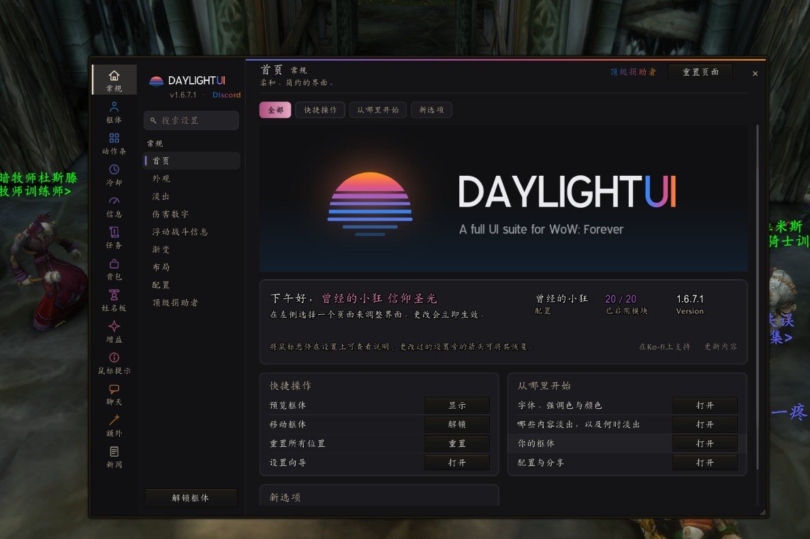
装完进游戏，按「伤害 / 坦克」布局大致是下面这样：玩家和目标框在中间偏下，右上是微缩地图和任务追踪，底部是动作条。截图地点是丧钟镇。
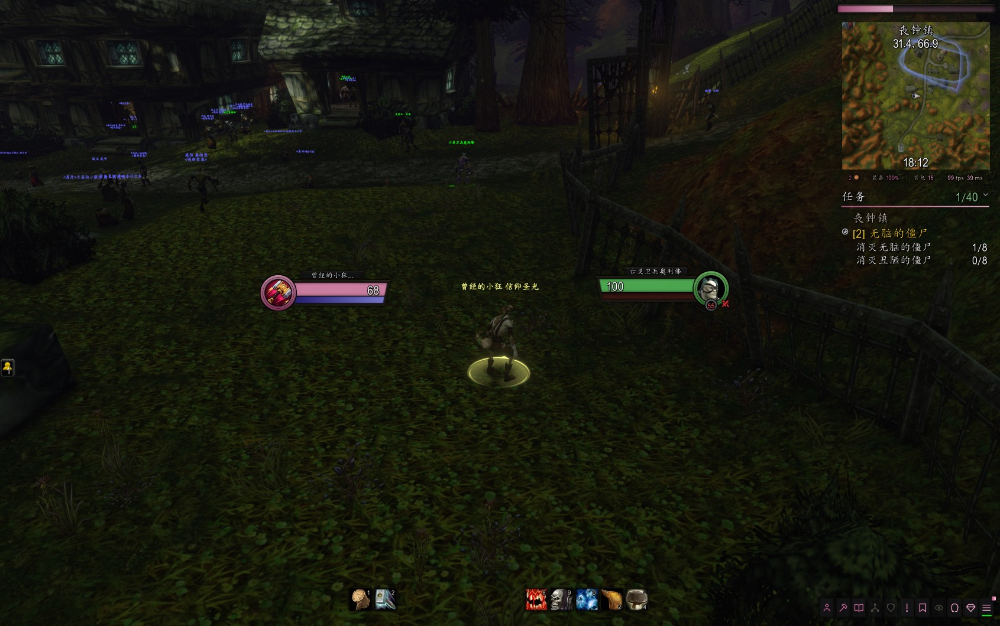
常用命令与模块
主命令是 /dui。只输入 /dui 或打错子命令时，默认只列出少数几条，并提示 /dui all 可看全部。
- /dui打开设置。Esc 游戏菜单里的 DaylightUI 也能进。
- /dui install再次打开设置向导，给当前角色做设置或再走一遍。
- /dui unlock移动框体。右键拖动柄复位；结束后输入 /dui lock。
- /dui reset把所有框体放回默认位置。这不是卸载。
- /dui test用样例单位预览。/dui test raid 预览 40 人团队。
- /dui export · /dui import导出或导入配置字符串。导入会做成新配置，不覆盖正在用的。
- /cdm打开冷却管理器编辑器，也可 /dui cdm。
- /dui bank不靠近银行也能看自己的银行和其他角色背包。
另外还有 /rl（若没被其他插件占用）、/dui notes、/dui buffs，以及姓名板排错用的 /dui platecheck、plateprobe、platefix。以游戏内 /dui all 为准。
配置导入导出
- 位置：
/dui→ 常规 → 配置（页面上也称「配置与分享」）。也可用/dui export、/dui import。 - 导出包括设置、框体位置和 Edit Mode 布局，不包括「玩的过程中学到的」数据。从较新版本导出的字符串，旧版会拒绝。
中文客户端如遇到缺字，可到「常规 > 外观」里查看是否有「使用我所用语言的字体」。
常见问题
安装与显示
- 搜到两个 DaylightUI：只装正式包 v1.6.7.1-forever，不要装 DaylightUI Simplified Chinese Localization。
- 装了但游戏里没有：先看文件夹有没有多套一层，是不是放到了
_forever_而不是_retail_、_classic_era_或旧的_classic_beta_，以及有没有只/reload没重启。 - 微缩地图发黑或自己变焦：原版在 1.6.7.1 已修，确认「本地插件」里就是这个版本。
- 姓名板不见了：输入
/dui platecheck，再按提示用plateprobe或platefix。 - 战斗中拖不动框：正常限制，出战斗再解锁。
- 手柄模式下安装失败：先在游戏设置里关掉手柄模式，再执行
/dui install。原版提示原文：「手柄模式开启时无法安装：请先关闭（设置选项 > 手柄），执行/dui install，然后再重新开启。」
下面这些插件和对应的 DaylightUI 模块不要同时开。向导遇到冲突时会让你二选一；也可以到角色选择界面的插件列表里关掉其中一方。插件名保持官方英文。
- 动作条 / 冷却管理器EllesmereUI Action Bars、EllesmereUI Cooldown Manager
- 背包Baganator
- 增益与减益BuffLedger（同时开会警告，/bl 也可能被占用）
- 聊天 / 信息面板 / 任务EllesmereUI Chat、Minimap、Damage Meters、Quest Tracker；以及 Kaliel's Tracker
- 姓名板Platynator、EllesmereUI Nameplates、Threat Plates、Plater、Kui Nameplates
- 游戏窗口皮肤 / 框体EllesmereUI Blizzard Skin、EllesmereUI Unit Frames
- 鼠标提示 / 点击施法PrettyTooltip 会让出完整提示框；已加载 Clique 时由 Clique 接管点击施法
卸载与还原
- 完全退出游戏。若只是暂时不用，在角色选择界面的插件列表里取消勾选
DaylightUI和所有DaylightUI_*即可。 - 要卸掉文件，删除
_forever_\Interface\AddOns\下这 1 个核心 + 11 个模块文件夹。不要误删HeyboxPlayerInfo。/dui reset只还原框体位置，不是卸载。 - 设置存在账号的 SavedVariables 里，变量名是 DaylightUIDB，路径在
WTF\Account\<账号>\SavedVariables\。只删插件文件夹不会自动清这份存档。
相关链接
- 黑盒工坊官网：本教程的安装主线。
- CurseForge · DaylightUI：原版备选下载，不是本稿主线。
- daylightui.com：作者官网，含配置说明。
数据来源：国服黑盒工坊与游戏内截图（2026-11-11）；原版插件包 DaylightUI-v1.6.7.1-forever 的 README、toc、Locales/zhCN.lua 与命令说明；CurseForge 项目页与更新说明；https://daylightui.com/。数据核对：2026 年 11 月 11 日。